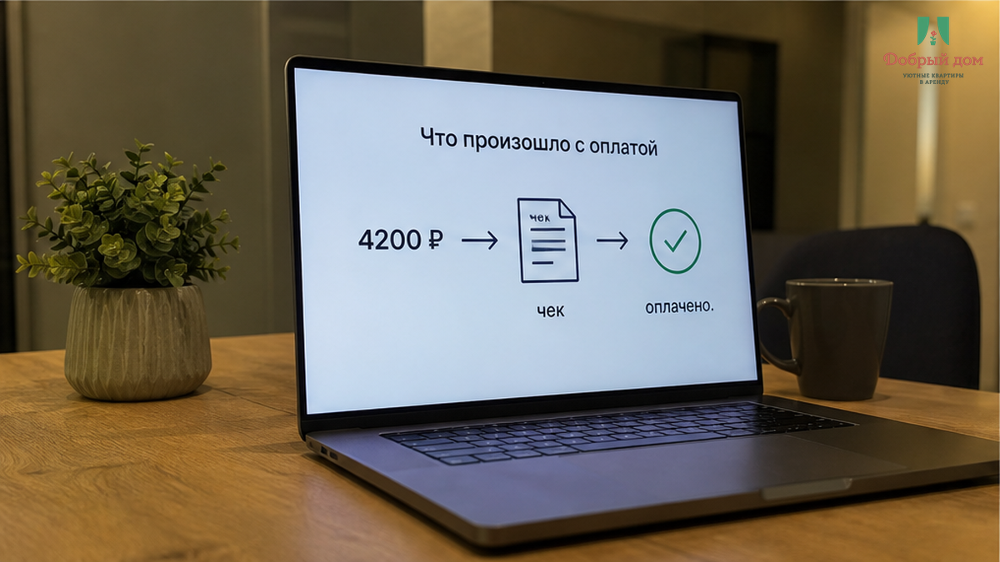
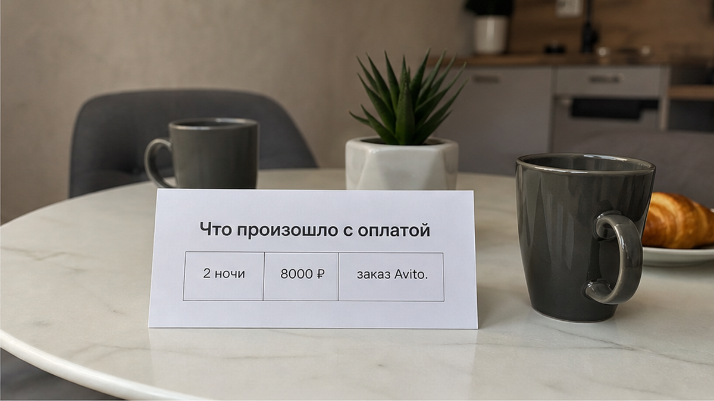
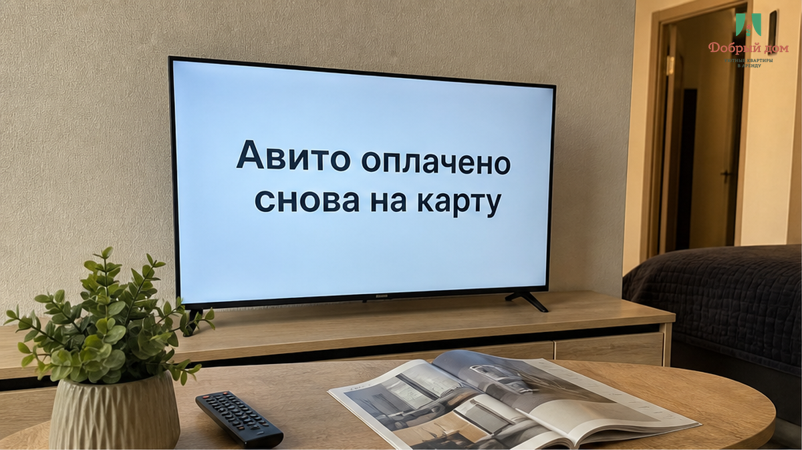
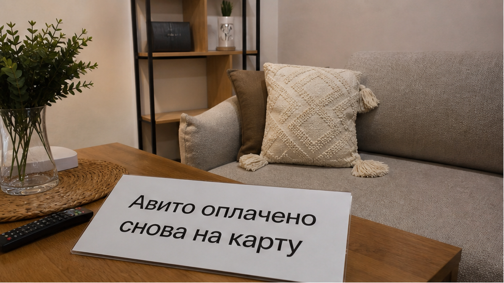
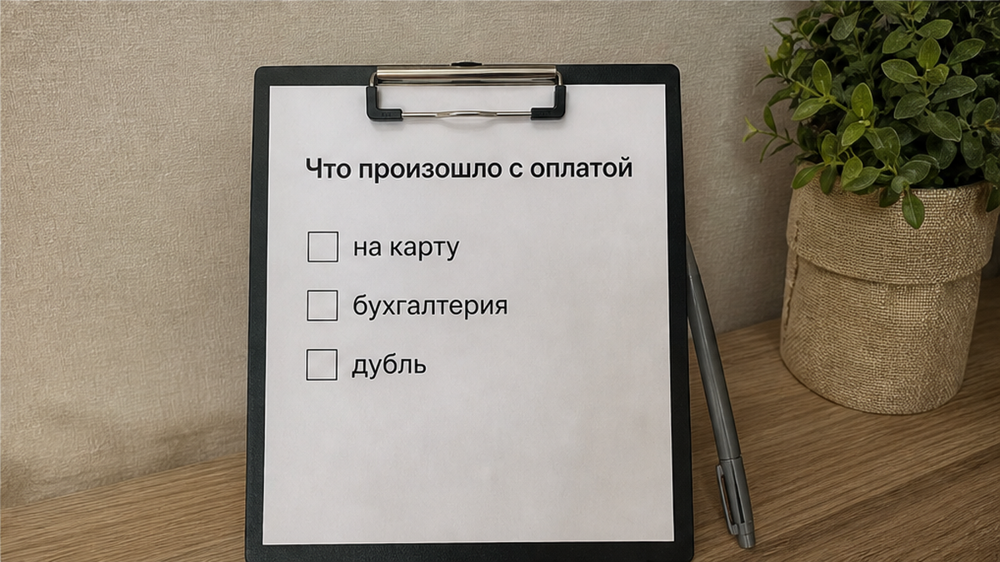
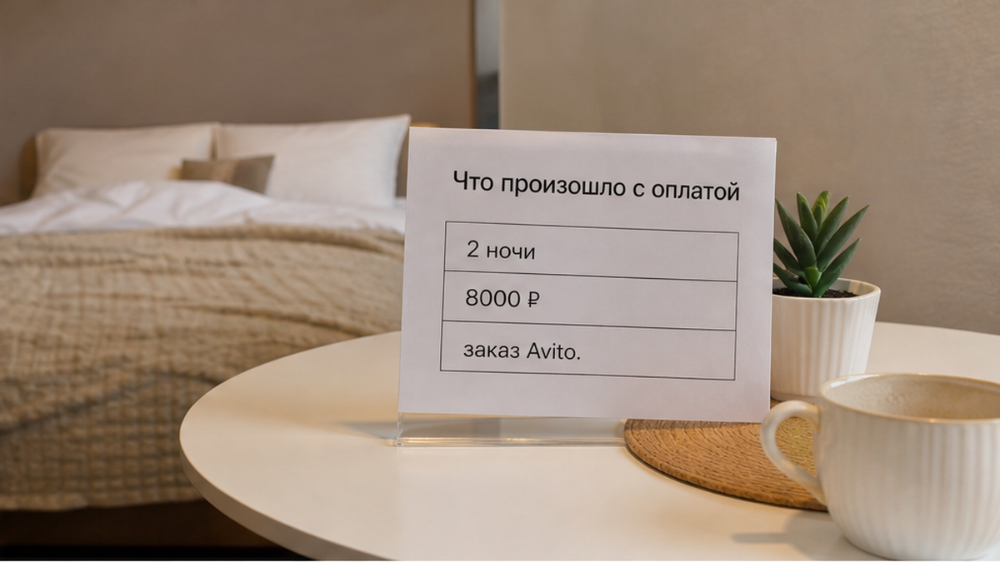
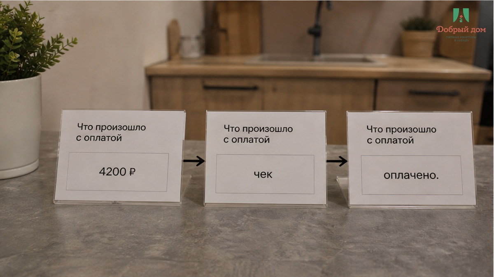

«Предоплату на карту продублируйте, бухгалтерия не видит» — такое сообщение пришло в чат Avito сразу после того, как в заказе появилась отметка «оплачено».
Гостья бронировала квартиру в Тюмени на две ночи. Общая сумма — 8 000 ₽: 4 200 ₽ она внесла через Avito, ещё 3 800 ₽ должна была отдать при заселении. Именно так всё было указано в карточке и в заказе. Деньги списались с карты, заказ получил статус «бронь подтверждена», в приложении появился чек.
А затем в переписке попросили перевести те же 4 200 ₽ ещё раз — уже по номеру карты. Объяснение звучало буднично: «У нас другая система учёта». Гостья ответила: «Я же оплатила, у меня чек». В ответ получила: «Это другая оплата, так принято, иначе бронь не держим».
За пару часов до заезда тон стал жёстче: «Отмените заказ — так дешевле, переведёте напрямую 8 000». То есть человеку, который уже внёс предоплату на площадке, предложили сначала повторить платёж мимо Avito, а потом и вовсе отказаться от защищённого заказа ради полной суммы на карту.
Гостья написала нам, потому что искала запасной вариант на те же даты и хотела понять, нормально ли это.
Я хост посуточной в Тюмени. Это «Добрый дом». Если есть сомнение, нам обычно присылают скриншоты в Telegram или MAX — так можно проверить ситуацию до того, как деньги уйдут второй раз.
Сразу зафиксирую главное: это не залог, не «ещё раз предоплата», а одна оплаченная бронь плюс остаток по заказу. В данном случае — 4 200 ₽ через Avito и 3 800 ₽ при заселении. Всё остальное должно быть написано в самом заказе, а не появляться внезапно в чате.



Путаница возникает из-за слова «предоплата». Гостю предлагают думать, будто есть предоплата для площадки и ещё одна — непосредственно хозяину. Но если в заказе Avito указано, что 4 200 ₽ уже оплачены, это и есть предоплата по брони. Деньги прошли через площадку, у заказа есть номер и статус, а у гостя — чек.
Когда после этого просят «продублировать на карту», речь не идёт о нормальном дополнительном шаге. Это вторая оплата той же суммы — если только в заказе прямо не указана другая, отдельная услуга или платёж.
Залог — отдельная история. Иногда хозяин действительно просит возвратный депозит за сохранность квартиры, но его размер, условия и порядок возврата должны быть описаны заранее. Залог не должен возникать в переписке как замена уже оплаченной предоплаты. Мы отдельно писали о том, чем залог отличается от «доплаты, о которой сказали в чате».
Есть и простая арифметика. Когда человек ищет квартиры посуточно Тюмень, он может сначала смотреть цену за ночь, но оплачивает итоговую сумму за весь заезд. Здесь расчёт прозрачный: 4 200 ₽ плюс 3 800 ₽ — это 8 000 ₽. Если появляется ещё одна сумма, она должна быть объяснена внутри заказа. В сообщении хозяина этого объяснения недостаточно. Похожую ситуацию с расхождением цены в карточке и на экране оплаты мы разбирали здесь.


У площадки есть комиссия для хозяев. По условиям сезона 2026 комиссия хоста на Avito составляет 20%, 17% или 15% — в зависимости от условий размещения; информация опубликована на host.avito.com/season-2026. Поэтому хозяева действительно считают, сколько теряют на каждой брони.
Но это объясняет возможный мотив, а не делает перевод безопасным. Комиссия — вопрос хозяина и его условий работы с площадкой. Гость не обязан компенсировать её повторной оплатой и не должен выходить из подтверждённого заказа ради чужой экономии.
После отмены заказа и перевода на карту меняется вся схема. Исчезает подтверждённая бронь, спор приходится вести уже не по конкретному заказу, а по переписке и чеку перевода физическому лицу. Поддержка площадки больше не видит действующую бронь, на которую можно опереться.
Отмена — не техническая формальность. Это смена всей схемы возврата денег. Поэтому отменять заказ по просьбе из чата, чтобы «договориться проще», не стоит.
Я не утверждаю, что каждый человек, который просит перевод на карту, обязательно мошенник. Бывает путаница в учёте, бывает неудобство площадки, бывает подмена аккаунта. Но проверять чужие намерения — не задача гостя. Задача гостя — не платить дважды.
У нас правило простое: если бронь уже оплачена на площадке, второй предоплаты мимо площадки мы не просим. На предложение «отмените и договоримся напрямую» ответ один: «Нет. Так не заселяем.»

Начните с одного вопроса: «А где в заказе Avito написано, что предоплату нужно платить второй раз на карту?»
Откройте именно заказ, а не только переписку. Проверьте статус, номер, общую сумму и остаток. Если там указано, что 4 200 ₽ оплачены, а 3 800 ₽ нужно внести при заселении, условия уже понятны. Сообщение в чате не может само по себе изменить заказ.
Сохраните скриншоты карточки объявления, заказа со статусом и номером, чека и всей переписки. Особенно важны просьба перевести деньги на карту и предложение отменить бронь. Не удаляйте сообщения и не переносите разговор в сторонний мессенджер: внутри площадки остаётся последовательная история общения.
Если давление продолжается, обратитесь в поддержку Avito: 8 804 700-04-40. Назовите номер заказа и приложите скриншоты. Не переводите деньги «на всякий случай», даже если заезд уже сегодня и кажется, что других вариантов нет. Мы писали о последствиях такого решения в материале про перевод до того, как условия стали понятными.
Вам уже предлагали заплатить ту же предоплату второй раз после оплаты на Avito или просили отменить заказ ради прямого перевода? Напишите в Telegram или MAX, не отправляя реквизиты и персональные данные. По переписке обычно видно, где закончилась обычная организационная ошибка и началось давление.

Большинство денежных конфликтов начинается с одного действия: человек переводит деньги раньше, чем проверяет, за что именно платит. Оплаченная бронь на площадке — не «первый взнос доверия», а уже совершённая операция. Сверху не должно появляться второй такой же оплаты, если её нет в заказе.
Сначала проверка. Потом перевод. Не наоборот.
Наш вывод простой. Оплаченная бронь — это дверь с замком: пока ключ находится внутри площадки, вам есть куда обратиться. Перевод на карту мимо заказа — дверь, снятая с петель. Войти, может быть, и проще, но закрыть её потом нечем.
Если нужен нормальный вариант на ваши даты в Тюмени, мы на связи: